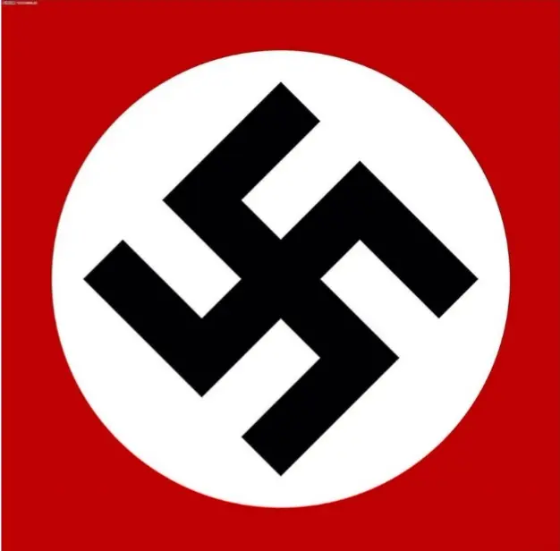

第一个问题:
二战是什么时候发起的()
A.1949年10月1日
B.1945年5月8日
C.1939年9月1日
第二个问题:
二战打了几年()
A.8年
B.6年
C.14年
第三个问题:
下列哪个是纳粹旗()

第四个问题:
基辅保卫战是什么时候开始的()
A.1941年7月7日
B.1945年8月5日
C.1964年5月12日
第五个问题:
戈培尔最后去向如何()
A.被判十年监禁
B.自杀
C.向敌人投降
第六个问题:
芬兰大约在什么时候打野()
A.1941年5月~1944年6月
B.1939年9月~1945年5月
C.1945年7月~1949年10月
第七个问题:
下列哪个是虎式坦克()


第八个问题:
"巴巴罗萨行动"发生时间()
A.1942年6月~1944年6月
B.1939年9月~1945年5月
C.1941年6月~1942年1月
第九个问题:
二战参战国家( )个
A.61个
B.35个
C.47个
第十个问题:
二战的阵营分别是( )
A.轴心国、联合国
B.轴心国、同盟国
C.轴心国、合众国
欢迎你,加入我们德粉群聊吧